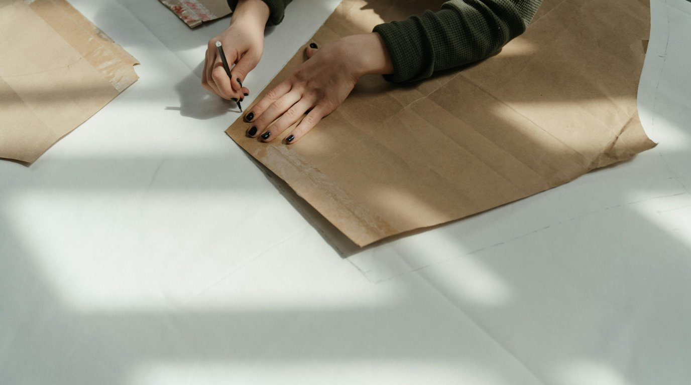
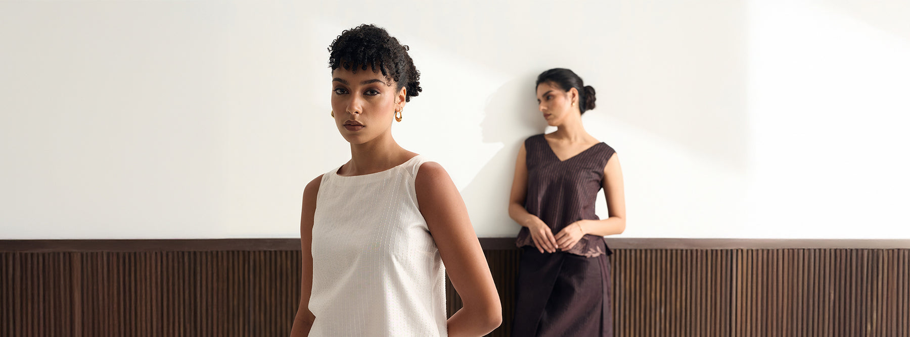
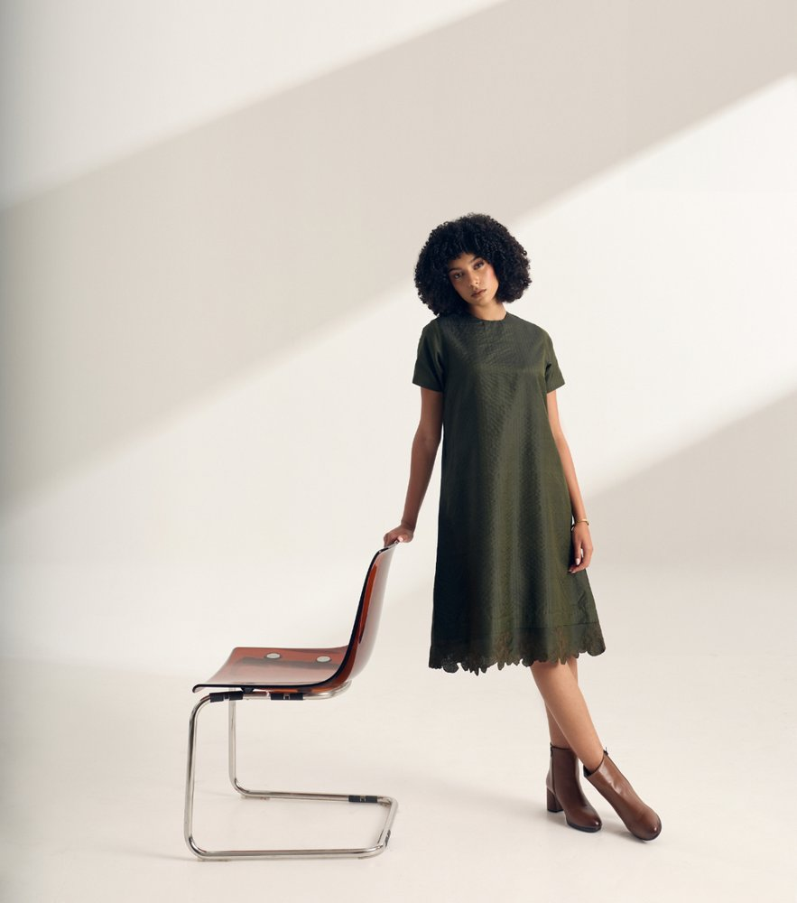

Our Story
Our founder, an entrepreneur who spent over three decades building businesses, often found herself in that familiar rush: early meetings, packed schedules, long flights, and even longer days. In all of it, the hardest part was always: what to wear. What to pack. What fits. What still felt like her.
Conversations with colleagues, quick chats between meetings, often circled back to the same thing: busy lives, real careers, evolving bodies, and no time (or interest) in endless browsing. They didn't want to shop. They wanted a wardrobe they could trust. A wardrobe that felt like an extension of who they were.


This brand is about removing the noise. It's about well-cut clothing made from beautiful fabrics, pieces that are easy to reach for, easy to wear, and easy to care for. It's about reducing decision fatigue, and replacing it with clarity, confidence, and comfort.
Because the women we design for don't want more options. They want the right ones.
We make clothing for the in-between moments. The quiet transitions. From boardroom to airport, from workday to dinner, our pieces are designed to move through all of it.
At Eighth Hour, we design a focused, well-edited wardrobe. One built on form and function. Each piece is thoughtfully designed to simplify dressing, natural fabrics that breathe, shapes that flatter without fuss, and finishes that age with grace.
We believe that clothing should work for you, not the other way around.